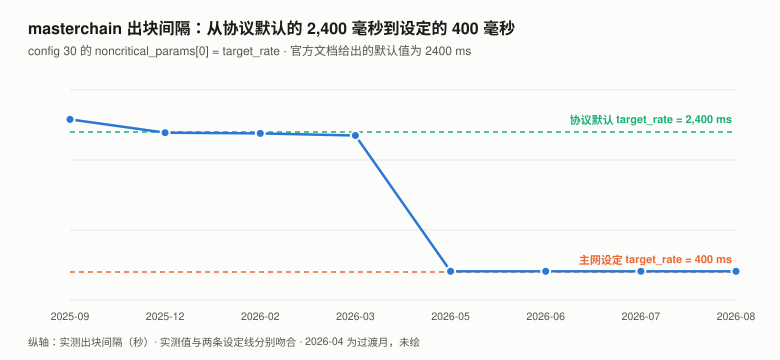
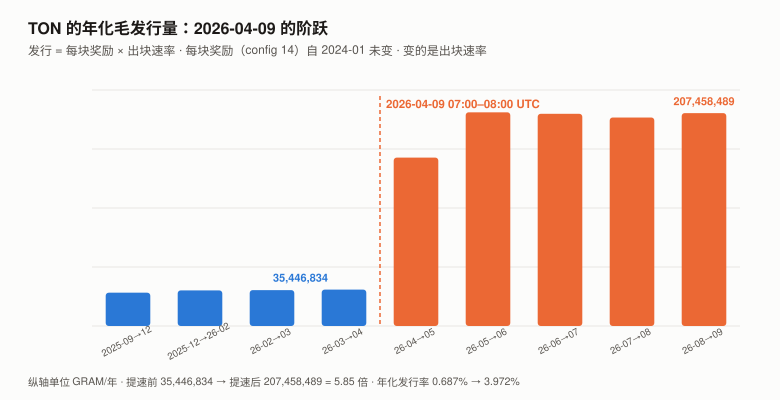
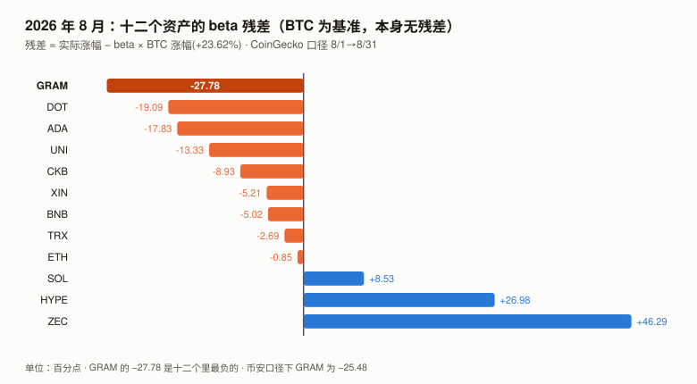

GRAM / TON 完整调研与分析报告
版本：2026 年 8 月（首期）
完成日期：2026-09-11
本系列第十三个资产（BTC / SOL / ADA / ETH / BNB / HYPE / UNI / TRX / XIN / DOT / ZEC / CKB / GRAM）代号说明：本报告的标的是 The Open Network（TON）的原生代币。
它在 2026 年 6 月从 Toncoin（TON）更名为 Gram（GRAM），仅改名称、代号与图标，
没有换币、没有迁移合约。本报告统一用 GRAM 指代该代币，用 TON 指代区块链本身。本版更新要点（首期）：
- 本期最重要的发现：TON 在 2026-04-09 把出块速率提高了约 5.9 倍，
而按块发放的区块奖励一个字没改，于是年化发行量从约 3,500 万 GRAM 跳到约 2.07 亿 GRAM。
它走的是配置参数变更的治理程序（config 30，需验证者按质押加权 3/4 多数通过），
但没有以货币政策的形式被讨论过——没有任何一方把它作为发行量变更提出。- 切换时点精确到小时：2026-04-09 07:00–08:00 UTC，masterchain 出块速率从 0.423 块/秒
跳到 2.070 → 2.502 块/秒。前一天（2026-04-08）发布了节点版本 v2026.04，
其发版说明自己写着「anti-spam measures that could affect block rate」。- 发行机制已用两条路径量化并闭合：区块数 × 配置常量 = 17,619,762 GRAM（八月毛发行），
链上逐块余额加总实测净增 17,549,235 GRAM，残差 70,527 GRAM（毛发行的 0.40%）。
⚠️ 这个残差不能简单称为「销毁」，它同时含在途消息、验证者费用项与分片轮次计数误差（见 4.6）。- 总供应量可以从链上直接加总并与外部口径对上：
masterchain 余额 + basechain 余额 = 5,246,916,594 GRAM，
CoinGecko 报告的总供应量 5,247,067,410，相差 0.0029%。- 八月的价格表现是本期十二个资产里最负的特质成分（BTC 为基准，本身无残差）：BTC +24.95%（2017 年以来最好的八月），
GRAM −1.35%，beta 0.967 对应的预期是 +24.13%，特质残差 −25.48 个百分点。- 实测质押池 APY 13.29%–17.72%（Tonstakers 13.52%，TF 池 17.72%），与发行量跳升量级相容。
⚠️ 初稿称它为「独立证实」，已按领域审查降级为一致性检查——这些 APY 并非 1,082 份独立测量，
且其分母与发行率的分母不是同一个口径（见 4.7）。
利益冲突声明：作者未持有 GRAM，与 TON 基金会、Telegram 及任何 TON 生态项目无雇佣、
顾问或投资关系。本报告的链上数据全部由作者从 TON 公开节点 API（toncenter / tonapi）
与 GitHub 一手仓库直接抓取。
核心结论摘要（一页速览）
| 维度 | 观测 | 判断 |
|---|---|---|
| 价格（8/31） | $1.3870，八月 −1.35%（BTC +24.95%） | 特质残差 −25.48pp（币安口径）/ −27.78pp（CoinGecko 口径，8.2 排名用此口径），十二个资产里最负 |
| 距 ATH | −83.59%（$8.25，2024-06-14） | |
| 近一年 | −57.30%（BTC −32.15%） | |
| 发行速率 | 2026-04-09 起年化约 2.07 亿 GRAM，此前约 3,500 万 | 5.9 倍，且无配置变更、无治理投票 |
| 年化发行率 | 约 0.68% → 约 3.97% | 对总供应量 52.2 亿 |
| 八月净增发 | +17,549,235 GRAM（+0.3360%） | 链上逐块余额加总实测 |
| 两路核对的残差 | 70,527 GRAM = 毛发行的 0.40% | ⚠️ 含销毁、在途资金、分片计数误差，未分离 |
| 质押 | Elector 余额 13.38 亿 GRAM（流通量 48.0%） | 当前轮有效质押 6.59 亿（23.7%） |
| 质押 APY（实测） | 13.29%–17.72% | 与发行跳升量级相容（非独立验证，见 4.7） |
| 验证者 | 390 个（masterchain 100 个） | 前 10 名仅占质押的 3.99% |
| 网络使用 | 八月 basechain 交易约 1.059 亿笔（95% 区间 7,461 万–1.371 亿） | 日均约 341 万笔 |
| USDT on TON | 14.30 亿枚，持有人 342 万 | |
| 八月最大事件 | 2026-08-31 Telegram 开始向部分用户推送原生自托管 Gram Wallet | ⚠️ 该条为搜索摘要，本报告未取得一手确认 |
| 本报告给目标价 | 否 | 理由见第 10 章 |
一句话：TON 把出块目标间隔从协议默认的 2,400 毫秒改成 400 毫秒，
而它的区块奖励是按「块」发的、两年半没改过——于是发行量也涨了 5.85 倍。
这次修改本身走了配置变更的治理程序（验证者 3/4 加权投票），
但它从未被作为一次货币政策变更来讨论：官方文档把两个参数分别写得很清楚，从不把它们相乘。⚠️ 而市场没有把它当坏消息：提速后一周 GRAM/BTC 比价 +9.80%，一个月 +80.62%（见 4.9）。
1. GRAM 是什么
1.1 一个代币，两个名字
| 区块链 | The Open Network（TON），2018 年由 Telegram 立项，2020 年社区接手 |
| 原生代币 | Gram（GRAM），2026 年 6 月由 Toncoin（TON）更名而来 |
| 共识 | PoS，Simplex 共识（2026 年引入），390 个验证者 |
| 结构 | masterchain（wc = −1）+ basechain（wc = 0），支持动态分片 |
| 初始分发 | PoW 挖矿（2020–2022），非 ICO |
更名的核实状态：
| 事实 | 核实状态 |
|---|---|
| 更名已完成、仅改名称/代号/图标 | ✅ 一手：ton.org 官网现称 "Gram is the native coin of the TON blockchain" |
| 币安已完成迁移 | ✅ 一手：exchangeInfo 显示 8 个 TON* 交易对全部 status=BREAK，7 个 GRAM* 全部 TRADING |
| 无换币、价格连续 | ✅ 一手：TONUSDT 最后一根日线 2026-06-30 收 $1.6000，GRAMUSDT 首根 2026-07-02 开 $1.6000 |
| 更名生效日 2026-06-15 | ⚠️ 仅搜索摘要，本报告未打开一手公告 |
| 「社区投票以 81.22% 通过」 | ❌ 未核实，本报告不使用。见下 |
⚠️ 关于那个 81.22%：多篇报道引用这个数字，但没有一篇给出一手来源
（本报告打开了其中一篇完整核对，它「引用推文但不提供任何官方公告、治理文档或链接」）。
本报告另行检索了 TON 的链上治理平台api.ton.vote，其 104 个 DAO 中没有任何官方治理实体。
按本系列 ADA 期确立的规则——治理类得票率必须查最终状态、不得采信报道——本条不予使用。
1.2 发行机制：两个常量，一个乘数
TON 的新币发行完全由网络配置参数 14 决定。官方文档（content/foundations/config.mdx 第 233 行）原文：
Param 14: block reward — This parameter controls the Gram rewards for producing blocks.
Themasterchain_block_feeis applied to each masterchain block, while thebasechain_block_fee
applies to a workchain. If there is a split in the workchain, thebasechain_block_feeis
distributed among its shard blocks based on their depth.
| 参数 | 值 |
|---|---|
masterchain_block_fee |
1.7 GRAM / 每个 masterchain 区块 |
basechain_block_fee |
1.0 GRAM / 每个 basechain 区块 |
关键结构：奖励是按「区块」发的，不是按「时间」发的。
因此发行速率 = 每块奖励 × 出块速率。出块变快多少倍，发行就变快多少倍。
这不是一个隐藏机制，它写在公开文档里。
但文档里没有任何一句话提到「出块速率变化会等比例改变发行量」——
第 4 章要说的就是这件事在 2026 年 4 月真的发生了。
1.3 总供应量可以从链上直接加总
TON 没有一个「总供应量」字段。但每个区块的 ValueFlow 结构里有 from_prev_blk，
它是该链上全部账户余额的合计。
basechain 会动态分片（本报告实测 2026-08-08 至 08-13 就分过），
但下表取的五个快照时点经逐一核实全部为单一分片
（2026-03-01 / 04-01 / 08-01 / 09-01 / 09-11），因此两条链相加即可：
总供应量 = masterchain 的 from_prev_blk + basechain 的 from_prev_blk
| 值（2026-09-11） | |
|---|---|
| masterchain 余额 | 2,464,048,218.30 GRAM |
| basechain 余额 | 2,782,868,375.67 GRAM |
| 合计 | 5,246,916,593.97 GRAM |
| 对照：CoinGecko 报告的总供应量 | 5,247,067,410 |
| 差 | 0.0029% |
⚠️ 这个等式不是 TON 协议定义的总供应量，初稿把它当成了，已更正。
协议自己的总供应量在
McStateExtra的global_balance字段里（block.tlb第 583 行），
而from_prev_blk只是该链上账户余额的合计，不含：
① 已离开账户、尚未入账的在途消息价值；② 单独记账的total_validator_fees；
③ 分片时必须覆盖同一 masterchain 确认边界下的全部分片。
另外CurrencyCollection里的 extra currencies 应按币种分开，不能并入原生币。本报告已尝试读取
global_balance并失败：它在 ShardState 而非 Block 里，
toncenter 与 tonapi 的区块接口都不提供，读它需要完整的 TON lite-client。下期补。因此这一行的正确表述是：本报告的加总值与 CoinGecko 的口径相差 0.0029%，
这是一个经验上的吻合，不是对等式的证明。 上述三项遗漏在当前规模下显然很小
（否则不会只差 15 万枚），但它们的大小本报告没有测量。
2. GRAM 的发展阶段划分
| 阶段 | 时间 | 标志 |
|---|---|---|
| 一 · Telegram 立项与 SEC 叫停 | 2018 – 2020 | 代币原名 Gram；SEC 执法后 Telegram 退出 |
| 二 · 社区接手与 PoW 分发 | 2020 – 2022 | 社区以 The Open Network 重启，代币更名 Toncoin；通过 PoW 挖矿分发，非 ICO |
| 三 · Telegram 生态回归 | 2023 – 2024-06 | 小程序/钱包生态爆发，2024-06-14 见 ATH $8.25 |
| 四 · 回落与 Simplex 共识开发 | 2024-07 – 2026-03 | 价格从 ATH 回落逾八成；共识协议重写（Catchain → Simplex） |
| 五 · 提速、更名与钱包推送 | 2026-04 – 至今 | 2026-04-09 出块提速 6 倍（发行随之 5.9 倍）；2026-06 更名 Gram；2026-08-31 Telegram 开始推送原生钱包 |
第五阶段的三件事都发生在 2026 年，而其中第一件——出块提速——没有被当作货币政策事件讨论过。
本报告第 4 章就是在做这件事。
3. GRAM 当前现状
3.1 价格与市场
口径：GRAM 与 BTC 均取币安 UTC 日收盘价，八月定义为 2026-07-31 收盘 → 2026-08-31 收盘。
代号迁移的拼接：2025-09-10 至 2026-06-30 用 TONUSDT，2026-07-02 起用 GRAMUSDT。
两段无重叠日，且 TON 最后一根收 $1.6000、GRAM 首根开 $1.6000，为 1:1 连续，中间缺 2026-07-01 一天。
| 指标 | 值 |
|---|---|
| 价格（2026-09-11） | $1.3540 |
| 市值 / 排名 | $37.73 亿 / 第 28 位 |
| 流通量 / 总供应量 | 2,786,316,316 / 5,247,067,410（无上限，发行永续） |
| 八月涨幅 | −1.35%（BTC +24.95%） |
| 八月盘中区间 | $1.2940（8/18）– $1.5600（8/22），振幅 20.6% |
| 距 ATH | −83.59%（$8.25，2024-06-14） |
| 近一年 / 年初至今 | −57.30% / −20.07%（BTC −32.15% / −12.96%） |
| 八月币安日成交额（中位 / 均值） | $512.7 万 / $712.8 万 |
3.2 八月：BTC 最好的八月，GRAM 反而跌了
| 值 | |
|---|---|
| BTC 八月涨幅 | +24.95%（2017 年以来最好的八月） |
| GRAM 的 beta（对 BTC，365 天） | 0.967 |
| beta 预期涨幅 | +24.13% |
| GRAM 实际涨幅 | −1.35% |
| 特质（残差）成分 | 约 −25.48 个百分点 |
用 CoinGecko 口径（GRAM −4.94% / BTC +23.62%）算，残差约 −28.1pp，方向相同、幅度更大。
在 2026 年 8 月的十三个资产里，这是最负的特质成分（见 8.2 的完整对照）。
⚠️ 本报告没有计算过往各月的残差，因此不声称它是「本系列历史最大」。
不要用 R² 来论证这件事——GRAM 的 R² 是 29.2%，字面含义是「70.8% 的日波动不由 BTC 解释」，
拿它当「没有自身信息」的依据是把反证当证据（本系列 CKB 期犯过这个错，已固化为规则）。
正确的统计量是 beta 残差，而它给出的结论比「没有自身信息」强得多：八月 GRAM 自己的贡献是显著为负的。
3.3 风险特征
| 指标 | GRAM | BTC |
|---|---|---|
| 年化波动率（365 天） | 79.6% | 44.4% |
| beta | 0.967 | 1.000 |
| 相关系数 / R² | 0.540 / 29.2% | — |
数据源一致性检查（CKB 期教训的例行项）：逐月对照 CoinGecko 与币安的 GRAM 序列，
13 个月全部一致（波动率比值 < 1.5 倍、月均价偏差 < 5%），本期无 CKB 那类数据源污染问题。
3.4 宏观环境
| 因素 | 状态（9 月初） | 影响 |
|---|---|---|
| 联邦基金利率 | 3.50–3.75% | — |
| 9 月加息概率 | 65.9%（CME FedWatch，8/31） | 利空 |
| PCE 通胀 | 3.7%（12 个月）/ 4.1%（6 个月） | 支持加息 |
| 10 年期美债 | 4.79% | — |
本节沿用与本系列 TRX / UNI / XIN / DOT / ZEC / CKB 期同一时点的宏观快照。
但八月 GRAM 与宏观完全脱钩——BTC 在同样的宏观环境下涨了 24.95%。
4. 一次把发行量放大 5.85 倍的性能升级（本期核心章之一）
4.1 出块速率的历史
按 masterchain 区块序号在各时点相减：
| 区间 | masterchain 块/秒 | 出块间隔 |
|---|---|---|
| 2025-09-01 → 2025-12-01 | 0.388 | 2.58 秒 |
| 2025-12-01 → 2026-02-01 | 0.417 | 2.39 秒 |
| 2026-02-01 → 2026-03-01 | 0.421 | 2.38 秒 |
| 2026-03-01 → 2026-04-01 | 0.426 | 2.35 秒 |
| 2026-04-01 → 2026-05-01 | 1.894 | （过渡） |
| 2026-05-01 → 2026-06-01 | 2.454 | 0.41 秒 |
| 2026-06-01 → 2026-07-01 | 2.441 | 0.41 秒 |
| 2026-07-01 → 2026-08-01 | 2.417 | 0.41 秒 |
| 2026-08-01 → 2026-09-01 | 2.457 | 0.41 秒 |
4.2 切换时点：精确到一小时
| 时点（UTC） | masterchain seqno | 前一小时的块/秒 |
|---|---|---|
| 2026-04-09 04:00 | 59,233,192 | — |
| 2026-04-09 05:00 | 59,234,722 | 0.425 |
| 2026-04-09 06:00 | 59,236,243 | 0.422 |
| 2026-04-09 07:00 | 59,237,767 | 0.423 |
| 2026-04-09 08:00 | 59,245,220 | 2.070 ← 切换 |
| 2026-04-09 09:00 | 59,254,229 | 2.502 |
| 2026-04-09 12:00 | 59,281,200 | 2.501 |
切换发生在 2026-04-09 07:00–08:00 UTC 之间。
4.3 是什么把它切过去的：config 30
初稿在这里判断错了一次，值得记录：本报告最初查了 config 28 / 29 / 20 / 21 / 8 在切换前后是否变化，
结果都没变，于是写下「这次提速没有任何配置参数变更」。
读官方文档时才发现漏查了 config 30——而它恰恰就是那个参数。
官方文档（content/foundations/config.mdx，Param 30 段）原文标注：
- TON v2026.03:
ConfigParam 30introduced on testnet.- TON v2026.04:
ConfigParam 30enabled on mainnet.
实测 config 30 的出现与变化：
| 时点（UTC） | config 30 |
|---|---|
| 2026-03-01 | 不存在 |
| 2026-04-01 | 不存在 |
| 2026-04-08 | 出现，49 字节（根 10 60：仅 masterchain） |
| 2026-04-09 07:00 | 49 字节 |
| 2026-04-09 08:00 | 62 字节（根 10 e0：masterchain + 分片链） |
| 2026-04-15 | 62 字节 |
config 30 是 Simplex（Catchain 2.0）共识的配置，其中带一张可调参数表 noncritical_params。
官方文档给出该表的键定义：
| 键 | 名称 | 默认值 | 含义（官方原文译） |
|---|---|---|---|
0 |
target_rate |
2400 ms |
目标出块/时隙间隔；用于领导者节奏、出块时机与跳过调度 |
1 |
first_block_timeout |
1000 ms |
领导者窗口内首个缺失区块开始跳过投票前的基础超时 |
13 |
min_block_interval |
0 ms |
父区块时间与下一个本地生成区块之间的最小间隔 |
主网当前实测值（tonapi 解码）：
mc: {"use_quic": true, "slots_per_leader_window": 4, "noncritical_params": {"0": 400, "1": 700, "13": 300}}
shard: {"use_quic": true, "slots_per_leader_window": 16, "noncritical_params": {"0": 400, "1": 700, "10": 64, "13": 300}}
即 target_rate 被从默认的 2,400 毫秒改为 400 毫秒。

| 设定值 | 实测出块间隔 | |
|---|---|---|
| 提速前 | 默认 2,400 ms | 2.35 – 2.58 秒 ✓ |
| 提速后 | 400 ms | 0.41 秒 ✓ |
| 比率 | 6.00 倍 | 约 5.9 倍 |
4.4 而区块奖励一个字没改
TON 的新币发行由 config 14 的两个常量决定（见 1.2）。本报告查了它在六个历史时点的值：
| 时点 | config 14 原始字节 |
|---|---|
| 2024-01-01 | …6b46553f10043b9aca00… |
| 2024-09-01 | 同上 |
| 2025-03-01 | 同上 |
| 2025-09-01 | 同上 |
| 2025-12-01 | 同上 |
| 2026-03-01 | 同上 |
| 2026-06-01 | 同上 |
| 2026-08-01 | 同上 |
| 当前 | 同上 |
解码：6b（tag）+ 4+6553f100 = 1,700,000,000 nanoton = 1.7 GRAM + 4+3b9aca00 = 1,000,000,000 = 1.0 GRAM。
与 tonapi 的 JSON 解码一致（两路互证）。
⚠️ 一个必须做的对照实验：toncenter 的
getConfigParam接受seqno参数，
但「六个时点返回相同字节」也可能是接口忽略了seqno。
本报告因此拿一个每 18 小时必变的参数（config 34验证者集）做对照：
当前值与 2025-12-01 的值确实不同，证明seqno被真正使用。
「config 14 从未改变」这个结论因此成立。
4.5 结果：发行量跟着出块速率走
| 区间 | masterchain 块/秒 | basechain 逻辑轮/秒 | 年化毛发行（GRAM） |
|---|---|---|---|
| 2025-09-01 → 2025-12-01 | 0.388 | 0.369 | 32,425,696 |
| 2025-12-01 → 2026-02-01 | 0.417 | 0.390 | 34,690,019 |
| 2026-02-01 → 2026-03-01 | 0.421 | 0.395 | 35,002,804 |
| 2026-03-01 → 2026-04-01 | 0.426 | 0.400 | 35,446,834 |
| 2026-04-01 → 2026-05-01 | 1.894 | 1.984 | 164,116,235 |
| 2026-05-01 → 2026-06-01 | 2.454 | 2.434 | 208,290,601 |
| 2026-06-01 → 2026-07-01 | 2.441 | 2.407 | 206,762,970 |
| 2026-07-01 → 2026-08-01 | 2.417 | 2.334 | 203,158,223 |
| 2026-08-01 → 2026-09-01 | 2.457 | 2.401 | 207,458,489 |
⚠️ basechain 的计数需要一个额外说明（领域审查指出，本报告据此补做了实证检验）。
官方文档写的是「
basechain_block_feeapplies to a workchain；分片时按深度在各分片块之间分摊」，
共识代码里每个分片块的奖励是basechain_create_fee >> shard_prefix_length，即除以 2^深度。
因此「分片块数 × 1.0」只有在区间内始终未分片时才成立，而本报告实测八月并非如此：
2026-08-08 至 08-13 之间，basechain 多次分裂为 2–3 个分片（6 小时粒度采样中，24 个时点有 13 个处于分片状态）。本报告因此直接去分片期读了各分片块的
created字段：
2026-08-09 06:00 UTC 深度 createdshard 40000000000000001 0.500000000 GRAM shard C0000000000000001 0.500000000 GRAM 合计 1.000000000 GRAM 即每个「逻辑轮」的 basechain 发行恒为 1.0 GRAM，与分片数无关。
而本报告用的 seqno 差正是逻辑轮数（TON 的分裂/合并规则使合并后的 seqno 承接子分片的最大值）。
⚠️ 这仍是一个近似：子分片的 seqno 会互相漂移（实测同一时刻两个子分片相差 7），
跨分裂/合并边界的轮数计数因此有小幅误差。4.6 的 0.40% 残差给出了这个误差的上界。

提速前（2026-03 → 04）年化 3,544 万 GRAM，提速后（2026-08）年化 2.075 亿 GRAM——5.85 倍。
对各自时点的总供应量：年化发行率从 0.687%（2026-04-01 的 5,158,349,660 GRAM）
升到 3.972%（2026-08-01 的 5,223,622,160 GRAM）——5.78 倍。
一个额外的独立佐证：提速前的 2026 年 3 月，实测总供应量从 5,155,462,700 增至 5,158,349,660，
净增 2,886,960 GRAM；而按区块数 × 常量的模型预测是 2,953,903 GRAM，两者差 2.3%。
模型在提速前后都成立。
4.6 八月发行量的两路核对
| 路径 | 计算 | 结果 |
|---|---|---|
| ① 区块数 × 配置常量 | masterchain 6,581,263 块 × 1.7 + basechain 6,431,615 逻辑轮 × 1.0 | 17,619,762 GRAM（毛发行） |
| ② 链上余额加总实测 | （masterchain + basechain 余额）9/1 − 8/1 | +17,549,235 GRAM（净增） |
| 差额 | 70,527 GRAM = 毛发行的 0.40% |
⚠️ 「差额即手续费销毁」是初稿的说法，已按领域审查撤回。
这 70,527 GRAM 是一个残差项，它里面至少混着四样东西：
① 手续费销毁（burned）；② 路径 ② 遗漏的在途消息价值与total_validator_fees的变化；
③ 跨分裂/合并边界的逻辑轮计数误差；④ 两个时点的区块边界不完全对齐。
本报告没有把它们分开，因此只能说「残差占毛发行 0.40%」，不能说「销毁了 70,527 枚」。⚠️ 这两条路径的独立性也要说清楚，不能重复 CKB 期的错误。
路径 ② 的余额与路径 ① 的单价created在同一个ValueFlow结构里，由块内会计恒等式相连——
这不是两次完全独立的测量。
但它仍有约束力：路径 ① 的区块数是独立输入（序号相减），单价来自config 14。
若区块数错了 20%，残差会是 7.3% 而不是 0.40%。
因此 0.40% 的残差主要证明的是「区块计数是对的」，
而不是「净发行全部来自config 14」——后者需要直接累加created与burned才能证明，本期未做。
4.7 第三条路：质押收益率
如果发行量真的涨了近 6 倍，质押收益率应当同步跳升。这条检验不经过本报告的任何模型。
实测质押池 APY（tonapi /v2/staking/pools，1,082 个池）：
| 池 / 类型 | 规模（GRAM） | APY |
|---|---|---|
| Tonstakers（最大流动性质押池） | 131,263,562 | 13.52% |
| Whales Club 队列 | 6,766,963 – 7,150,649 | 14.53% |
| Tonkeeper 队列 | 6,807,945 | 13.29% |
| TF 提名池（1,075 个） | 合计 211,098,478 | 17.72% |
| 全部池合计 | 372,344,234（占 Elector 余额 27.8%） | 区间 13.29% – 17.72% |
当前实测 13–18%。
⚠️ 初稿把这一条称为「唯一完全独立的验证」，并写「TON 历史质押收益率在 3–5% 量级」。
领域审查指出两处问题，本报告接受并降级这条证据：① 这 1,082 个数不是 1,082 份独立测量。 审查读了
tonkeeper/opentonapi的实现：
TF 池与 Whales 池共用同一个GetAPY()，其取值来自同一个上游接口；
Tonstakers 走另一条统计路径并乘费用系数。实质上只有两到三个独立来源。
⚠️ 本报告未独立复核该源码，此处采信领域审查的结论。② 分母口径不配平。 APY 的分母是投入质押的本金（且受双轮资金占用、费用、复利影响），
而发行率的分母是全网供应量。用本报告自己的数：年发行 2.075 亿 ÷ Elector 余额 13.38 亿 = 15.5%，
÷ 单轮有效质押 6.59 亿 = 31.5%。实测的 13–18% 落在这两个口径之间，
只能说「量级相容」，不能说「确认了 5.85 倍」。③ 「历史 3–5%」这个对照值本报告没有一手来源，已从正文结论中移除。
结论：这条证据不是独立验证，是一致性检查。它能排除「发行其实没变」，
不能单独支撑「涨了 5.85 倍」。真正支撑 5.85 倍的是 4.5 与 4.6。
4.8 这件事的性质
⚠️ 本节经过一次实质更正。 初稿写的是「这次变更没有经过任何治理程序」。
推理审查指出这与本报告自己在记分卡里给 G8-1 写的豁免理由（「配置变更需验证者多数同意」）互斥。
复核官方文档后确认：初稿错了。
TON 有配置变更的链上治理机制，写在 config 11 里。官方文档原文：
Param 11: config params — This parameter indicates under what conditions proposals to change
the TON configuration are accepted……min_wins: 3/4 of validators by the sum of the pledges
must vote in favor.
实测当前值：普通参数 min_wins = 2、max_tot_rounds = 6；关键参数 min_wins = 3、max_tot_rounds = 7。
| 问题 | 答案 |
|---|---|
| 有没有改货币参数？ | 没有。config 14 自 2024-01 起未动。 |
| 有没有改配置参数？ | 改了。config 30 在 2026-04-09 07:00–08:00 那一小时里变更。 |
| 有没有治理程序？ | 有。 配置变更需通过 config 11 定义的验证者投票（按质押加权 3/4 多数） |
| 本报告找到那次提案的记录了吗？ | 没有。 配置合约（-1:5555…）的 list_proposals 当前返回空——它只保存活跃提案，历史提案已过期。本报告无法取得 2026-04-09 那次变更的提案与投票记录。 |
| 是不是「意外」？ | 不是。 target_rate 被从默认 2,400 ms 显式设为 400 ms，这是一次刻意的参数设置 |
| 官方文档有没有提到发行量影响？ | 没有。 Param 14 段只描述机制，Param 30 段只描述共识；两段都不提两者相乘的后果 |
因此本报告的正确表述是：
这次变更走了「配置参数变更」的治理程序，但没有走「货币政策变更」的讨论程序。
验证者们批准的是一个共识节奏参数；没有任何公开材料显示，有人在批准时把它作为
「把年化发行率从 0.687% 提到 3.972%」的决定来讨论。一个把出块速率当作工程参数、把区块奖励当作货币参数的治理结构，
在这两者相乘的地方没有设岗。
⚠️ 但「没有设岗」是本报告在公开材料范围内的判断——
验证者的内部讨论、基金会的事前沟通，本报告都没有渠道核实。
4.9 市场有没有把它当回事？（推理审查指出本报告漏了这个检验）
初稿把「发行量放大 5.85 倍」登记为空头论据，却从未检验它是否已经反映在价格里。
而检验所需的数据本报告一直拿在手上。
GRAM/BTC 比价在提速前后（币安 UTC 日收盘）：
| 窗口 | 比价变化 | GRAM | BTC | z 值 |
|---|---|---|---|---|
| 04-08 → 04-09（当日） | −0.04% | +0.97% | +1.01% | −0.02 |
| 04-08 → 04-16（+1 周） | +9.80% | +16.11% | +5.75% | +1.32 |
| 04-08 → 04-23（+2 周） | −2.05% | +7.85% | +10.11% | −0.21 |
| 04-08 → 05-08（+1 月） | +80.62% | +103.81% | +12.84% | — |
| 04-08 → 2026-09-11（至今） | +0.77% | +9.64% | +8.80% | — |
z 值以提速前 90 天的比价日对数变动标准差（2.51%）为尺度。
结论：市场对这次发行量变更没有可观测的负面反应，提速后一个月 GRAM 相对 BTC 反而大涨 80.62%。
这个结果对本报告的两个方向都有影响：
| 读法 | 含义 |
|---|---|
| A：市场没注意到 | 支持本报告「它没有被当作货币政策事件讨论」的判断，但同时说明「发行量涨了 5.85 倍」是一条尚未被定价的信息，而不是已经兑现的利空 |
| B：市场注意到了但不在意 | 则「发行量涨了 5.85 倍」已在四个月前被定价，空头论据 #1 就是历史事实而非前瞻判断 |
本报告无法区分 A 与 B，也不主张其中任何一个。
但必须明确一件事：本报告没有把八月 −25.48pp 的负特质归因于四个月前的发行变更。
两者相隔四个多月，中间 GRAM 还大幅跑赢过 BTC，任何因果连接都需要本报告没有的证据。这个检验是推理审查提出的，初稿完全没有做。
它把空头 #1 的性质从「前瞻风险」改成了「已发生但定价状态不明的事实」——这是一个实质降级。
5. 八月的链上协议变更（本期核心章之二）
本报告逐项比对了 37 个网络配置参数在 2026-08-01 与 2026-09-01 的取值：
31 项未变，6 项变化，其中 3 项（config 32/34/36）是每轮必换的验证者集，属预期内。
真正的协议变更有三次，时点用二分法收敛到小时：
| 时点（UTC） | 参数 | 变化 |
|---|---|---|
| 2026-08-04 21:00 | config 30（Simplex 共识） |
62 → 72 字节 |
| 2026-08-20 01:00 | config 31（基础合约白名单） |
304 → 344 字节：新增 1 个合约 |
| 2026-08-20 01:00 | config 29（共识配置） |
同时变更，长度不变 |
| 2026-08-28 09:00 | config 30 |
72 → 96 字节 |
5.1 八月新增的那个基础合约
config 31 是「免收 gas 与存储费、可发起 tick-tock 交易」的合约白名单。
官方文档：「验证者把位于 masterchain 且地址出现在本参数中的账户归类为 special……
只有 special 账户享有相关协议特权，包括修改公共库的权限。」
当前白名单有 9 个合约。本报告逐个查了它们的最早交易时间：
| 地址（前 20 位） | 最早交易 | 说明 |
|---|---|---|
0000000000000000… |
2019-11-15 | 配置合约 |
3333333333333333… |
2019-11-15 | Elector（选举/质押） |
dd24c4a1f2b88f8b… |
2021-08-16 | ETH Bridge |
4d5c0210b35dadda… |
2021-09-30 | BSC Bridge |
ead7da389bde317c… |
2025-06-30 | — |
c50f890366c81f5c… |
2026-05-25 | — |
b74dd9593f9bd8ea… |
2026-05-25 | — |
a8ce6c36aa8ba536… |
2026-05-25 | — |
9234809b5b02186e… |
2026-08-18 10:47 | 唯一在八月出现的 |
该合约的链上时间线：
| 时点（UTC） | 事件 |
|---|---|
| 2026-08-18 10:47 | 合约首笔交易（部署） |
| 2026-08-20 00:59 | 收到 op 0x32b85a9b，随后连续多笔 op 0xcdb9d286 |
| 2026-08-20 01:00 | 被写入 config 31；config 29 同时变更 |
| 2026-09-11 00:44 | 仍有活动；当前余额 0.995 GRAM |
5.2 与 Telegram 原生钱包的关系：本报告能说什么、不能说什么
能说的（一手）：
- TON 官方文档的「负数参数」表中明确列有：
-123| Telegram wallet contract bytecode used by the Telegram's native Gram wallet.
即 TON 协议里确实有一个专门存放 Telegram 原生钱包合约字节码的配置槽位。 - 上述
9234809b…合约于 2026-08-18 部署、08-20 获得 special 特权（含修改公共库的权限）。 - 八月的三次协议变更中，两次集中在 08-20 与 08-28。
不能说的：
- ❌ 本报告没有读到
config -123的值，因此无法确认它何时被写入、写的是什么。
已尝试且失败：toncenter 的getConfigParam明确拒绝负数索引
（返回param should be non-negative）；tonapi 的解码结果只含非负键；
原始配置 BoC 需要自行实现 Hashmap 解析器，本期未做。下期补。 - ❌ 本报告无法证明
9234809b…就是 Telegram 钱包相关合约。
证据只有「八月唯一新增」与「时间邻近」，这两条都不具排他性。 - ⚠️ 「2026-08-31 Telegram 开始向部分用户推送原生自托管 Gram Wallet」这条为搜索摘要，
本报告未取得一手确认。 它若为真，是本期最重要的基本面事件；
但本报告的价格分析（3.2）不依赖它。
第 5 章的意义在于：它给出了一条可以在下期被证实或证伪的链上线索。
如果 Telegram 钱包确实在推进，config -123与9234809b…的后续变化会记录下来；
如果没有，它们会停在那里。
6. 质押、验证者与安全预算
6.1 质押的两个口径
| 口径 | 数量 | 占流通量 |
|---|---|---|
| Elector 合约余额 | 1,337,746,378 GRAM | 48.0% |
当前验证轮的有效质押（total_stake） |
659,467,380 GRAM | 23.7% |
两者差约 2.03 倍。 机制解释：验证轮长 validators_elected_for = 65,536 秒（18.2 小时），
质押在轮次结束后还要锁 stake_held_for = 32,768 秒（9.1 小时），
且下一轮的质押在本轮结束前就已提交。因此 Elector 在任意时刻大致持有两轮的质押。
⚠️ 上述分解是本报告的推断，未逐项验证。
本报告在讲「锁仓比例」时用 Elector 口径，在讲「当前在保护网络的质押」时用total_stake口径，
两个数不可互换。
6.2 验证者结构
| 指标 | 值 |
|---|---|
| 验证者总数 | 390（config 34，上一轮 386） |
| 其中 masterchain 验证者 | 100 |
最小 / 最大质押（config 17） |
300,000 / 10,000,000 GRAM |
| 单个验证者实际质押 最大 / 中位 / 最小 | 2,680,089 / 1,613,334 / 686,401 |
| 前 10 名占总质押 | 3.99% |
| 前 50 名占总质押 | 19.70% |
按质押集中度衡量，TON 的验证者集是本系列见过最分散的之一——
前 10 名不到 4%，且协议用max_stake = 1,000 万 GRAM设了硬上限。
6.3 质押的委托层
| 类型 | 规模（GRAM） | 池数 |
|---|---|---|
tf（TON Foundation 提名池） |
211,098,478 | 1,075 |
liquidTF（Tonstakers） |
131,263,562 | 1 |
whales（Whales / Tonkeeper） |
29,982,194 | 6 |
| 合计 | 372,344,234 | 1,082 |
| 占 Elector 余额 | 27.8% |
即约 72% 的质押是验证者自有资金或未通过公开池委托。
6.4 安全预算与财富转移
| 值 | |
|---|---|
| 八月发行给验证者的区块奖励 | 17,619,762 GRAM |
| 按八月均价 $1.3809 折美元 | $2,433 万 |
| 年化 | $2.865 亿 |
| 年化安全预算 / 市值 | 7.59% |
这笔钱的来源是全体持有人的稀释，去向是质押者。
| 年化 | |
|---|---|
| 总供应量增长 | +3.97% |
| 质押者名义收益（实测 APY 区间） | 13.29% – 17.72% |
| 未质押者的份额变化 | −3.97% |
| 质押者的份额变化（取 TF 池 17.72%） | +13.22% |
| 质押者的份额变化（取 Tonstakers 13.52%） | +9.18% |
⚠️ 初稿在这里写「这是本系列见过的最大的一笔质押者 vs 非质押者财富转移」，已撤回——那是一个未复算的最高级断言。
按「年增发率 × 未参与分配的比例」这个口径复算：
资产 年增发 质押/参与率 年度转移规模 GRAM 3.97% 48.0% 2.06% DOT 3.30% 53.73% 1.53% ADA 1.47% 约 56.5% 0.64% ETH 0.863% 35.08% 0.56% GRAM 在这四个可比的 PoS 资产里确实最高，但与 DOT 的差距只有 0.53 个百分点，不是数量级差异。
⚠️ 更重要的是：这个口径无法跨机制比较。 CKB 的 NervosDAO 只补偿二次发行、SOL 的通胀递减、
ZEC 是 PoW 无质押——本报告没有为它们建立同构的口径，因此不做十三资产的排名。本节能说的是：GRAM 的这笔转移在 2026-04-09 那一小时里放大了约 6 倍，
而 Elector 口径下 48.0% 的流通量在质押，非质押的 52.0% 承担全部稀释。
7. 网络使用
| 指标 | 值 | 口径 |
|---|---|---|
| 八月 basechain 交易数 | 约 1.059 亿笔 | 抽样估计，120 个随机区块 |
| 95% 置信区间 | [7,461 万, 1.371 亿] | 分布高度右偏（均值 16.46，标准差 27.15） |
| 日均 | 约 341 万笔 | |
| 对照：ton.org 官网称「24h 330 万笔」 | 差 3% | ✅ 独立吻合 |
| USDT on TON 流通量 | 1,429,976,003 USD₮ | ✅ 一手（jetton master 合约） |
| USDT 持有人数 | 3,423,842 | |
| 对照：ton.org 官网称「约 14 亿 USDt」 | 吻合 | ✅ |
| 智能合约数（官网） | 1.808 亿 | ⚠️ 未独立验证 |
| 月活钱包（官网） | 230 万 | ⚠️ 链下指标，本报告无法验证 |
交易数的置信区间很宽（±30%），报告中不应把 1.059 亿当作精确值使用。
它足以支撑「日均在三百万笔量级」这个量级判断，不足以支撑任何逐月比较。
7.1 开发活跃度（一手，GitHub API）
| 仓库 | 2026-07 | 2026-08 | 2026-09（至 11 日） |
|---|---|---|---|
ton-blockchain/ton（L1 核心） |
147 | 62 | — |
ton-blockchain/acton（合约工具链） |
— | 184 | 216 |
ton-blockchain/docs |
25 | 26 | 7 |
八月发版：v2026.07（08-03，QUIC 性能）、v2026.08（08-17，
「Added collators to Simplex protocol, allowing offloading block generation to specialized nodes」）。
v2026.08 把出块生成拆分给专门的 collator 节点——这是继续提高出块能力的方向。
按第 4 章的机制，出块能力的任何进一步提升都会等比例提高发行量，除非同时下调config 14。
这是本报告认为下期最需要盯的一件事。
8. GRAM 与其他十二个资产的比较
口径声明：8 月涨幅统一为 CoinGecko 口径的 8/1→8/31，日成交额为 2026 年 8 月的日成交额中位数，
波动率与 beta 为 2025-09 至 2026-09 的日对数收益率。
GRAM 一行的波动率 / beta / R² 用币安拼接序列（TONUSDT + GRAMUSDT），
已验证 CoinGecko 与币安逐月一致，口径差异不影响结论。
8.1 十三资产矩阵
| 指标 | GRAM | CKB | ZEC | DOT | XIN | TRX | UNI | HYPE | BNB | ETH | SOL | ADA | BTC |
|---|---|---|---|---|---|---|---|---|---|---|---|---|---|
| 市值 | $37.73 亿 | $0.563 亿 | $204.8 亿 | $18.4 亿 | 无法计算 | $318.1 亿 | $44.0 亿 | $196.5 亿 | $1,009 亿 | $3,052 亿 | $622.7 亿 | $82.7 亿 | $16,047 亿 |
| 8 月涨幅 | −4.94% | +20.15% | +82.88% | +8.07% | +9.67% | +3.14% | +18.06% | +52.40% | +16.71% | +29.86% | +39.68% | +14.65% | +23.62% |
| 距 ATH | −83.59% | −97.40% | −62.09% | −98.03% | −96.75% | −22.31% | −84.30% | −0.26% | −44.66% | −49.43% | −63.73% | −92.86% | −36.62% |
| 8 月日成交中位数 | $512.7 万 | $146.5 万 | $2.091 亿 | $7,974 万 | $10,878 | $3.709 亿 | $2.456 亿 | $3.062 亿 | $6.399 亿 | $70.41 亿 | $14.35 亿 | $3.804 亿 | $217.09 亿 |
| 年化波动率 | 79.6% | 80.3% | 152.2% | 81.5% | 177.3% | 26.6% | 97.1% | 93.6% | 52.9% | 63.8% | 67.9% | 80.9% | 44.2% |
| beta | 0.967 | 1.231 | 1.549 | 1.15 | 0.63 | 0.247 | 1.329 | 1.076 | 0.920 | 1.300 | 1.319 | 1.375 | 1.000 |
| R² | 29.2% | 46.2% | 19.9% | 38.3% | 2.4% | 16.8% | 36.6% | 25.8% | 59.1% | 81.1% | 73.7% | 56.4% | 100% |
| 年增发 | +3.97% | +4.69% | +3.87% | +3.30% | 无机制 | +0.519% | 总减流增 | 待定 | −4.56% | +0.863% | 递减 | +1.47% | +0.83% |
两个位次值得单独指出：
① GRAM 是十三个资产里八月唯一下跌的（−4.94%，CoinGecko 口径；币安口径 −1.35%），
而同月 BTC +23.62%；
② 年增发 3.97% 在已给出数值的九个里排第三，仅次于 CKB 的 4.69% 与 ZEC 的 3.87%。
⚠️ 另外四个（XIN / UNI / HYPE / SOL）本系列未给出可比数值，不能断言全局位次。
8.2 八月的 beta 残差：十二个资产的横向对照
同一个月、同一个 BTC（+23.62%，CoinGecko 口径），除 BTC 自身（基准，残差恒为 0）外十二个资产的特质成分：
| 资产 | 八月实际 | beta | beta 预期 | 残差（百分点） |
|---|---|---|---|---|
| GRAM | −4.94% | 0.967 | +22.84% | −27.78 |
| DOT | +8.07% | 1.150 | +27.16% | −19.09 |
| ADA | +14.65% | 1.375 | +32.48% | −17.83 |
| UNI | +18.06% | 1.329 | +31.39% | −13.33 |
| CKB | +20.15% | 1.231 | +29.08% | −8.93 |
| XIN | +9.67% | 0.630 | +14.88% | −5.21 |
| BNB | +16.71% | 0.920 | +21.73% | −5.02 |
| TRX | +3.14% | 0.247 | +5.83% | −2.69 |
| ETH | +29.86% | 1.300 | +30.71% | −0.85 |
| SOL | +39.68% | 1.319 | +31.15% | +8.53 |
| HYPE | +52.40% | 1.076 | +25.42% | +26.98 |
| ZEC | +82.88% | 1.549 | +36.59% | +46.29 |

口径提醒：各资产的 beta 取自其所在期报告（2025-09 至 2026-09 的日对数收益率）。
本表只比较「同一个月内的横向位置」，不构成对任何资产的时序判断。
8.3 一个跨期观察：本系列见过的「发行量变更」
| 资产 | 发行量的变更方式 | 是否经过治理 |
|---|---|---|
| BTC | 减半，写死在代码里 | 不需要 |
| ETH | EIP-1559 / 合并 | 经过 EIP 流程与长期公开讨论 |
| BNB | 季度销毁，按公式 | 公司决定 |
| TRX | 治理提案 #104 调能量单价，间接使净供应转正 | ✅ 有提案、有投票 |
| DOT | 通胀曲线阶梯下调 | ✅ 有公投 |
| CKB | 二次发行分配比例随 U/C 漂移 | 无需治理（机制内生） |
| GRAM | 出块速率 ×6 → 发行量 ×5.85 | ❌ 本报告未发现任何治理记录 |
CKB 期与本期的对照很有意思：
CKB 的发行分配比例也在无人决策的情况下漂移，但那是机制内生的、缓慢的；
GRAM 是一次性的、6 倍的、由一个可调参数在一小时内完成的。
两者都说明同一件事：当货币参数被表述成工程参数时，它就不在治理的视野里。
9. 核心价值逻辑
评分规则：星级编码证据等级（不是后果量级），二者分列。
全部建立在二手转述上的论据不得给到五星。同源论据必须标注。
9.1 多头逻辑
| # | 论据 | 证据等级 | 后果量级 | 说明 |
|---|---|---|---|---|
| 1 | Telegram 分发渠道是真实且独一无二的：原生自托管钱包面向 10 亿+ 用户推送 | ★★ | 大（若成真） | ⚠️ 推送一事为搜索摘要，未取得一手确认。 官方文档确有 config -123（Telegram 钱包合约字节码槽位）这一条是一手的；但 08-18/08-20 的新基础合约登记，本报告在 5.2 已明确声明「不具排他性、无法证明与 Telegram 钱包有关」，因此不作为本条的支撑 |
| 2 | 稳定币规模真实：TON 上 USD₮ 14.30 亿枚、342 万持有人 | ★★★★★ | 中 | 一手：jetton master 合约直读，与官网数字独立吻合 |
| 3 | 验证者集分散：390 个验证者，前 10 名仅占质押 3.99%，协议设 1,000 万 GRAM 硬上限 | ★★★★★ | 中 | 一手：config 34 + config 17 |
| 4 | 技术路线在真实推进：Simplex 共识落地，出块间隔 2.4 秒 → 0.4 秒，八月又上线 collator 分离 | ★★★★★ | 大 | 一手：链上实测 + 发版记录。⚠️ 与空头 #1 是同一件事的两面，后果量级已对齐为「大」——本报告在 9.3 声明「不在其间下注」，就不能给同一事实的两面赋不同的量级 |
| 5 | 质押收益率 13.29%–17.72%，远高于稀释率 3.97% | ★★★ | 中 | 一手 API，但已按领域审查下调：这 1,082 个数并非 1,082 份独立测量（TF 与 Whales 共用同一上游取值）。⚠️ 这不是「凭空的收益」，来源就是非质押者的稀释（见 6.4），与空头 #1 同源 |
| 6 | 交易量真实：日均约 341 万笔，与官网口径独立吻合到 3% | ★★★ | 中 | 一手抽样，但 95% 区间 ±30%，精度有限 |
9.2 空头逻辑
| # | 论据 | 证据等级 | 后果量级 | 说明 |
|---|---|---|---|---|
| 1 | 发行量在 2026-04-09 一小时内放大 5.85 倍（年化 3,545 万 → 2.075 亿 GRAM），年化发行率 0.687% → 3.972% | ★★★★ | 大 | 一手：区块数（seqno 相减，独立）× config 14 常量（经对照实验确认自 2024-01 未变），与链上余额加总的残差 0.40%。⚠️ 已按领域审查从五星下调：余额加总与 created 由块内恒等式相连、质押 APY 不是独立测量（见 4.6/4.7）。未做的是直接累加 created 与 burned，下期补 |
| 2 | 这次变更走了配置变更的程序，但没有走货币政策的讨论程序；官方文档不提两个参数相乘的后果 | ★★★ | 中 | 一手：config 11 原文（验证者 3/4 加权投票）+ Param 14/30 文档原文。⚠️ 星级已从四星下调：本条的后半段是一个否定性结论，而本报告没能取到那次变更的提案与投票记录（配置合约只保存活跃提案），证据等级不可能是四星 |
| 3 | 八月是十二个资产里最负的特质成分：BTC +24.95%，GRAM −1.35%，残差 −25.48pp | ★★★★★ | 大 | 一手：币安日线 + beta 实测。⚠️ 仅限本期横向比较（BTC 为基准无残差），未与历史各月比较 |
| 4 | 非质押者承担全部稀释：流通量的 52.0% 未质押，年化被稀释 3.97% | ★★★★ | 大 | 一手：Elector 余额 / 流通量 |
| 5 | 继续提速的方向已经确定：v2026.08 上线 collator 分离；按现有机制，出块能力每提高一分，发行量等比例提高 |
★★★★ | 大（前瞻） | 一手：发版说明 + 机制推导。这是推论不是观测 |
| 6 | 距 ATH −83.59%，近一年 −57.30%，跑输 BTC 25 个百分点 | ★★★★★ | 中 | 一手 |
| 7 | 本报告未能读取 config -123，因此 Telegram 钱包的链上进展无法独立核实 |
★★★ | 中 | 这是本报告的能力缺口，不是网络的缺陷 |
9.3 多空之间真正的分歧点
多空双方对第 4 章的事实没有分歧。分歧在这里：
「发行量涨了 6 倍」是一个货币政策问题，还是一个会被增长掩盖的会计细节？
| 多头读法 | 空头读法 |
|---|---|
| 年化 2.07 亿 GRAM 的发行，若换来 10 亿 Telegram 用户的分发渠道，是极便宜的获客成本 | 这笔钱不是花在获客上，是发给验证者的。它买到的是出块速度，不是用户 |
| 质押率 48% 意味着大部分持有人已经在接收这笔发行，净稀释有限 | 52% 没有质押，他们承担全部稀释；且质押需要锁仓与技术门槛 |
| 出块提速是实打实的性能提升，对支付场景有价值 | 0.4 秒与 2.4 秒对支付体验的差别，值不值每年多发 1.7 亿 GRAM？这个问题从未被问过 |
本报告的立场：「值不值」无法用 2026 年 8 月的数据判定，本报告不在其间下注。
但要指出一个不对称：多头读法依赖一个尚未发生（或本报告未能核实）的事件——Telegram 钱包的实际采用；
空头读法只需要现状延续。
10. 估值：本报告给什么、不给什么
10.1 本报告不给目标价
| # | 理由 |
|---|---|
| 1 | 本期最大的变量（Telegram 钱包推送）本报告未能一手核实。 它若成真，是数量级的基本面变化；本报告不做没有证据的假设。 |
| 1b | ⚠️ 而本期最响的那个发现（发行量 ×5.85）已经发生四个月，市场无负面反应（见 4.9）。 这意味着它是「已发生但定价状态不明」，不是一条可以直接折进目标价的前瞻利空。 |
| 2 | 发行端刚刚发生 6 倍变化，且变化机制是可被再次调整的一个参数。 任何折现模型都需要一个发行路径假设，而这个路径现在由一个非货币性质的工程参数决定，不可预测。 |
| 3 | 持有人对网络收入没有索取权，除非质押。 手续费与区块奖励全部归验证者（ValueFlow 的 recovered 即 fees_collected）。质押收益是可得的，但它是稀释的再分配，不是外部现金流。 |
| 4 | ⚠️ 但必须声明：理由 3 本身不判别。 BTC 持有人同样对区块奖励无索取权，而本系列给了 BTC 目标价（用「已实现价格 × MVRV」这类不依赖持有人现金流的成本基准法）。真正承重的是理由 1 与 2。 |
| 5 | ⚠️ 一条本报告没有尝试的路径：TON 是完全透明的账本，成本基准法原理上可做。本期未做，因此「不给目标价」站在「未尝试」而非「尝试失败」上。下期第一优先。 |
10.2 改给反解式约束
初稿写了三条，其中 C 在推理审查后被撤回，实际留下两条。
| # | 约束 | 计算 |
|---|---|---|
| A | 要让当前的发行回到提速前的稀释水平 | 需 config 14 的 masterchain_block_fee 从 1.7 降到约 0.29 GRAM、basechain_block_fee 从 1.0 降到约 0.17 GRAM（即除以 5.85）。这是一次单参数修改，技术上是最简单的动作。 |
| B | 要让新增发行被使用量「买单」 | 八月发行 17,619,762 GRAM（$2,433 万）。若由交易费承担，按八月约 1.059 亿笔交易计，需每笔约 $0.23。而本报告按区块 ValueFlow 的 fees_collected − created 推算，TON 的单笔手续费在 $0.0003 量级——相差约 767 倍，即近三个数量级。 ⚠️ $0.0003 是量级推算，不是月度累计实测（下期第三优先），但它足以说明这条约束的距离有多远 |
| ~~C~~ | ~~要让 Telegram 钱包的分发「值回」发行~~ | 本条已撤回，不作为约束。 理由见下 |
⚠️ 约束 C 已撤回（推理审查指出，本报告接受）。 初稿写的是：
「年化发行 $2.865 亿，按 Telegram 的 10 亿用户计为每用户 $0.29/年，按 342 万 USD₮ 持有人计为每人 $83.7/年，
两个分母差 292 倍」。三个问题：
① 它的前提被本报告自己否定——9.3 的空头读法明写「这笔钱不是花在获客上，是发给验证者的」；
② 两个分母不是同一个量的区间两端（10 亿是 Telegram 全球用户，342 万是 USD₮ 持有人，定义不同构）；
③ 本报告自己第 7 节列的「月活钱包 230 万」落在声明区间之外（对应每用户 $124.6/年，高于所谓上沿）。
一个不排除任何取值的比较不是约束，是修辞。 相关讨论保留在 9.3 的多空分歧里。约束 A 是两个里唯一「一次参数修改就能完成」的。
它之所以重要，不是因为本报告建议这么做，而是因为：
既然把发行量放大 6 倍只需要改一个参数，把它调回去也只需要改一个参数。
这件事有没有被讨论过，是观察 TON 治理成熟度的一个直接指标。
10.3 这套判断的七个弱点
- 八月最重要的事件（Telegram 钱包推送）没有一手确认，它若为真会改变第 9.3 节的不对称判断。
config -123未能读取，Telegram 钱包的链上进展缺一条关键证据。- 交易数是抽样估计，95% 区间 ±30%，不足以支撑逐月比较。
- 质押的两个口径（Elector 1.338 亿 vs 当前轮 6.59 亿）的分解是推断，未逐项验证。
- 手续费只有量级推算（$0.0003/笔），没有月度累计实测，因此约束 B 的对照分母精度有限。
⚠️ 且这里有一处本报告自己的数对不上：4.6 的残差 70,527 GRAM ≈ $97,381，
而按 $0.0003/笔 × 1.059 亿笔推算的手续费约 $31,770，相差约 3 倍。
4.6 已说明残差含四项（销毁、在途资金、分片轮次误差、边界对齐），但本报告没有把它们分开，这个 3 倍差距未获解释。 - 配置变更的治理记录未能取得。本报告确认了
config 11定义的验证者投票机制存在，
但配置合约只保存活跃提案，2026-04-09 那次变更的提案与投票记录已过期、取不到。
因此「没有以货币政策形式讨论」是在公开材料范围内的判断。 - 提速对价格的影响本报告只做了事件窗检验，没有做归因。4.9 的结论是「市场无负面反应」，
本报告不主张它意味着「已定价」或「未定价」中的任何一个。
11. 附录
11.1 GRAM / TON 发展阶段速查
| 阶段 | 时间 | 标志 |
|---|---|---|
| 一 · Telegram 立项与 SEC 叫停 | 2018 – 2020 | 代币原名 Gram |
| 二 · 社区接手与 PoW 分发 | 2020 – 2022 | 更名 Toncoin，PoW 挖矿分发 |
| 三 · 生态爆发 | 2023 – 2024-06 | 2024-06-14 ATH $8.25 |
| 四 · 回落与共识重写 | 2024-07 – 2026-03 | Catchain → Simplex |
| 五 · 提速、更名与钱包 | 2026-04 – 至今 | 04-09 出块提速 6 倍；06 月更名 Gram；08-31 钱包推送 |
11.2 关键数据速查（截至 2026-09-11）
| 项 | 值 | 来源 |
|---|---|---|
| 价格 / 市值 / 排名 | $1.3540 / $37.73 亿 / 28 | CoinGecko + 币安 |
| ATH | $8.25（2024-06-14），−83.59% | CoinGecko |
| 总供应量（本报告加总口径） | 5,246,916,594 GRAM | masterchain + basechain 的 from_prev_blk。⚠️ 不是协议定义的总供应量（那是 McStateExtra.global_balance，本期未能读取），见 1.3 |
| 对照：CoinGecko 总供应量 | 5,247,067,410（差 0.0029%） | |
| 流通量 | 2,786,316,316 | CoinGecko |
| 八月净增发 | +17,549,235 GRAM（+0.3360%） | 链上余额加总 |
| 年化发行率 | 3.972%（提速前 0.687%） | |
masterchain_block_fee / basechain_block_fee |
1.7 / 1.0 GRAM，自 2024-01 未变 | config 14 |
target_rate |
400 ms（默认 2,400 ms） | config 30, noncritical_params[0] |
| 实测出块间隔 | 0.41 秒（提速前 2.35–2.58 秒） | masterchain seqno |
| Elector 余额 | 1,337,746,378 GRAM（流通量 48.0%） | 链上 |
| 当前轮有效质押 | 659,467,380 GRAM（23.7%） | config 34 |
| 验证者数 | 390（masterchain 100） | config 34 |
| 质押池 APY 实测 | 13.29% – 17.72% | tonapi，1,082 个池 |
| USD₮ on TON | 1,429,976,003 枚 / 342 万持有人 | jetton master |
| 八月 basechain 交易 | 约 1.059 亿 [7,461 万, 1.371 亿] | 抽样 120 块 |
| 基础合约白名单 | 9 个（八月新增 1 个） | config 31 |
11.3 数据来源与核实状态
| 数据 | 来源 | 核实状态 |
|---|---|---|
区块 ValueFlow（余额 / created / burned） |
tonapi blockchain/blocks |
✅ 一手直读 |
| masterchain / basechain 区块序号与时间 | toncenter v3 blocks |
✅ 一手 |
config 14 的历史值 |
toncenter v2 getConfigParam + seqno |
✅ 一手，且做了 config 34 对照实验证明 seqno 生效 |
config 30 的出现与变化 |
同上 | ✅ 一手 |
config 29 / 30 / 31 的八月变更时点 |
同上，二分法收敛到小时 | ✅ 一手 |
noncritical_params 键定义与默认值 |
ton-blockchain/docs 的 config.mdx |
✅ 一手，打开了原文件 |
| Param 14 的官方描述 | 同上，第 233–235 行 | ✅ 一手 |
config -123 的用途（Telegram 钱包字节码） |
同上，Negative parameters 表第 884 行 | ✅ 一手（用途） |
config -123 的取值与写入时点 |
— | ❌ 已尝试失败：toncenter 拒绝负数索引（param should be non-negative）；tonapi 解码只含非负键；原始 BoC 需自建 Hashmap 解析器。下期补 |
| 验证者集与质押 | tonapi blockchain/validators + config 17/34 |
✅ 一手 |
| 质押池 APY | tonapi staking/pools |
✅ 一手 API（APY 由池自行计算，独立于本报告模型） |
| 基础合约的最早交易时间 | toncenter v3 transactions?sort=asc |
✅ 一手 |
| USD₮ on TON | tonapi jettons/{master} |
✅ 一手 |
| 八月交易数 | toncenter v3，随机抽 120 个 basechain 区块 | ⚠️ 一手抽样，95% 区间 ±30% |
| 价格 / 波动率 / beta | 币安 api/v3/klines（TONUSDT + GRAMUSDT 拼接） |
✅ 一手交易所 |
| 代号迁移状态 | 币安 api/v3/exchangeInfo |
✅ 一手 |
| 市值 / 排名 / ATH / 流通量 | CoinGecko API | ✅ 一手 API |
| 发版记录与提交数 | GitHub REST API | ✅ 一手 |
| 更名生效日 2026-06-15 | 搜索摘要 | ⚠️ 未打开一手公告 |
| 「社区投票 81.22% 通过」 | 搜索摘要 | ❌ 无一手来源，本报告不使用（已打开其中一篇报道逐项核对，其不提供任何官方链接） |
| 2026-08-31 Telegram 钱包推送 | 搜索摘要 | ❌ 未取得一手确认；本报告的价格与发行分析不依赖它 |
| ton.org 的「2.3M 月活钱包」「1.808 亿智能合约」 | 官网营销页 | ⚠️ 未独立验证（同页的「390 验证者」「330 万笔/24h」「~14 亿 USDt」已独立验证通过） |
| 宏观快照 | 沿用本系列同期数据 | ⚠️ 未在本期重新核实 |
11.4 来源偏向声明
- 本期绝大多数结论来自 TON 自己的节点与官方文档，这类来源没有立场，但本报告对测什么有立场：
本报告主动去测的三个量（发行速率、出块速率、稀释分配）都指向空头方向。
一个同样诚实的多头分析可以去测本报告没测的量：Telegram 钱包的实际安装量、
小程序的日活、TON Connect 的调用量、手续费收入的绝对规模。本报告都没有测。 - 传统金融机构对 GRAM 的覆盖：本报告未做针对性检索，因此不声称「无覆盖」。
本报告用 CME FedWatch 与美联储数据做宏观配平，未引用任何机构的资产层观点。 - 本报告未联系 TON 基金会或 Telegram 求证。 所有「未发现治理记录」的判断
基于公开可查的链上与仓库状态，不排除存在未公开的决策过程。 - 本期有一处需要特别声明的偏向风险：第 4 章的叙述框架（「一次没有治理的 6 倍增发」）
本身带有价值判断。同样的事实可以被表述为「一次把出块延迟降低 83% 的性能升级，
其成本是每年多发 1.7 亿 GRAM」。本报告认为后一种表述同样准确，读者应当两种都读一遍。
11.5 发布前审查记录
见本期 thesis_scorecard.md。
免责声明：本报告是研究记录，不是投资建议。
本报告最重要的基本面变量（Telegram 原生钱包的推送与采用）未能取得一手确认，
这意味着本报告对 GRAM 的整体判断可能因为一条本报告没看到的证据而完全改变。
📋 核心问题与简明总结
GRAM / TON 简明速查（2026 年 8 月）
完整论证见
gram_research_report_202608.md。本文件是浓缩版，供快速复习。
本系列第十三个资产。本报告不给目标价。
0. 先说代号
标的是 The Open Network（TON）的原生代币。2026 年 6 月从 Toncoin（TON）更名为 Gram（GRAM），
只改名称、代号、图标，没有换币、没有迁移合约。
一手证据：币安的 8 个 TON* 交易对全部 status=BREAK，7 个 GRAM* 全部 TRADING；
TONUSDT 最后一根日线（2026-06-30）收 $1.6000，GRAMUSDT 首根（2026-07-02）开 $1.6000。
⚠️ 广泛流传的「社区投票以 81.22% 通过」本报告不使用——打开报道逐条核对，它不提供任何官方链接；
另检索 api.ton.vote 的 104 个 DAO，没有官方治理实体。
1. 本期最重要的发现
TON 在 2026-04-09 把出块速率提高了约 6 倍，而按块发放的区块奖励一个字没改。
于是发行量也涨了 5.85 倍。
| 提速前 | 提速后 | |
|---|---|---|
| masterchain 出块间隔 | 2.35 – 2.58 秒 | 0.41 秒 |
target_rate（config 30） |
协议默认 2,400 ms | 设定 400 ms |
masterchain_block_fee（config 14） |
1.7 GRAM | 1.7 GRAM（未变） |
| 年化毛发行 | 35,446,834 GRAM | 207,458,489 GRAM |
| 年化发行率 | 0.687% | 3.972% |
切换时点精确到一小时：2026-04-09 07:00–08:00 UTC（前一小时 0.423 块/秒，后一小时 2.070，再后 2.502）。
2. 机制：发行 = 每块奖励 × 出块速率
官方文档 Param 14 原文：奖励按每个区块发放（masterchain 1.7 GRAM，basechain 1.0 GRAM）。
因为是按「块」而不是按「时间」发，出块变快多少倍，发行就变快多少倍。
这不是隐藏机制，两个参数都公开可查。但官方文档里没有任何一句话把它们相乘。
3. config 14 真的没变——而且做了对照实验
本报告查了 config 14 在 2024-01-01 至今九个时点的原始字节，完全相同。
⚠️ 但「返回值相同」也可能是接口忽略了 seqno 参数。
本报告因此用一个每 18 小时必变的参数（config 34 验证者集）做对照：
当前值与 2025-12-01 的值确实不同，证明 seqno 生效，结论成立。
4. 三条路核对同一个数
| 路径 | 结果 |
|---|---|
| ① 区块数 × 配置常量 | 八月毛发行 17,619,762 GRAM |
② 链上余额加总（masterchain + basechain 的 from_prev_blk） |
八月净增 +17,549,235 GRAM |
| 残差 | 70,527 GRAM，占毛发行 0.40% ⚠️ 含销毁 + 在途资金 + 分片计数误差，未分离 |
| ③ 实测质押池 APY（1,082 个池） | 13.29% – 17.72%，与发行跳升量级相容 |
⚠️ 三条都不是完全独立的验证，完整报告已按领域审查降级：
①② 由块内会计恒等式相连；③ 的 1,082 个 APY 并非 1,082 份独立测量
（TF 与 Whales 池共用同一个上游取值），且分母口径与发行率不同
（年发行 ÷ Elector 余额 = 15.5%，÷ 单轮质押 = 31.5%，实测 13–18% 落在两者之间）。
0.40% 的残差主要证明「区块计数是对的」，不证明「净发行全部来自 config 14」。
另一个佐证：提速前的 2026 年 3 月，实测供应量净增 2,886,960，模型预测 2,953,903，差 2.3%。
5. 总供应量可以从链上加总，并与外部口径对上
masterchain 余额 2,464,048,218 + basechain 余额 2,782,868,376 = 5,246,916,594 GRAM，
CoinGecko 报的总供应量 5,247,067,410，差 0.0029%。
⚠️ 但这不是协议定义的总供应量。 协议的那个在 McStateExtra.global_balance 里，
本报告已尝试读取并失败（它在 ShardState 而非 Block，两个公开 API 都不提供）。
本报告的加总不含在途消息价值与 total_validator_fees，
因此 0.0029% 是经验吻合，不是对等式的证明。
6. 八月：BTC 最好的八月，GRAM 反而跌了
| 值 | |
|---|---|
| BTC 八月 | +24.95%（2017 年以来最好的八月） |
| GRAM 的 beta | 0.967 → 预期 +24.13% |
| GRAM 实际 | −1.35% |
| 特质残差 | −25.48 个百分点 |
在 2026 年 8 月的十二个资产里（BTC 为基准，本身无残差），GRAM 的残差是最负的
（口径统一为 CoinGecko 的 −27.78pp，次之是 DOT −19.09、ADA −17.83；
上表的 −25.48pp 是币安口径，两者不可混用）。
⚠️ 不要用 R² 论证这件事——GRAM 的 R² 是 29.2%，它的字面含义是「70.8% 的波动不由 BTC 解释」。
7. 谁在承担，谁在收取
| 年化 | |
|---|---|
| 总供应量增长 | +3.97% |
| 质押者名义收益（实测） | 13.29% – 17.72% |
| 未质押者份额变化 | −3.97% |
| 质押者份额变化 | +9.18%（Tonstakers）至 +13.22%（TF 池） |
Elector 合约锁着流通量的 48.0%（13.38 亿 GRAM），另外 52.0% 承担全部稀释。
年化安全预算约 $2.865 亿，占市值 7.59%。
8. 八月的链上协议变更（37 个参数逐项比对）
31 项未变。真正的变更三次（时点用二分法收敛到小时）：
| 时点（UTC） | 参数 | 变化 |
|---|---|---|
| 2026-08-04 21:00 | config 30 |
62 → 72 字节 |
| 2026-08-20 01:00 | config 31 |
304 → 344 字节：新增 1 个基础合约 |
| 2026-08-20 01:00 | config 29 |
同时变更 |
| 2026-08-28 09:00 | config 30 |
72 → 96 字节 |
新增的那个合约 9234809b… 是白名单 9 个里唯一在八月才出现的（首笔交易 2026-08-18 10:47），
08-20 00:59 收到一组激活消息，一分钟后被写入 config 31——获得「免 gas/存储费 + 可改公共库」的特权。
TON 官方文档确实有一个 config -123 槽位，用途是「Telegram 原生 Gram 钱包的合约字节码」。
⚠️ 但本报告读不到它的值（toncenter 拒绝负数索引、tonapi 只返回非负键），
因此无法证明 9234809b… 与 Telegram 钱包有关。
9. 网络使用
| 值 | |
|---|---|
| 八月 basechain 交易 | 约 1.059 亿笔，95% 区间 [7,461 万, 1.371 亿] |
| 日均 | 约 341 万笔（官网称 330 万/24h，差 3% ✅） |
| USD₮ on TON | 14.30 亿枚，342 万持有人 ✅ 一手 |
| 验证者 | 390 个，前 10 名仅占质押 3.99% |
10. 如果你只有 3 分钟，记住这 5 句话
- TON 的发行 = 每块奖励 × 出块速率。2026-04-09
target_rate从默认 2,400 ms 改成 400 ms，
每块奖励没动，于是年化发行从 0.687% 变成 3.972%。 - 它走了配置变更的治理程序（
config 11：验证者按质押加权 3/4 多数投票），
但没有走货币政策的讨论程序——官方文档把两个参数分别写清楚了，从不把它们相乘。
⚠️ 本报告未能取到那次变更的提案与投票记录（配置合约只存活跃提案）。 - 八月 BTC 涨 24.95%，GRAM 跌 1.35%，特质残差 −25.48pp，是十二个资产里最负的。
- 稀释由未质押的 52% 承担，收益归质押的 48%——按「年增发 × 未参与比例」口径为 2.06%/年，
在 GRAM / DOT / ADA / ETH 四个可比 PoS 资产里最高（DOT 1.53%），但不是数量级差异，也不做跨机制排名。 - ⚠️ 市场没有把发行量跳升当坏消息：提速后一周 GRAM/BTC 比价 +9.80%、一个月 +80.62%。
因此「发行量 ×5.85」是一条已发生、定价状态不明的事实，不是一条前瞻利空。
而本期最重要的基本面变量（2026-08-31 Telegram 原生钱包推送）本报告没能一手确认。
详细论证请阅读
gram_research_report_202608.md。
本期登记的可证伪论点见thesis_scorecard.md。
最后提醒：本报告尽力呈现多角度分析，不做投资建议。加密资产投资风险极高，请基于独立研究和自身风险承受能力做出决策。如有疑问，请咨询持牌金融顾问。
Generated with Claude for Financial Services